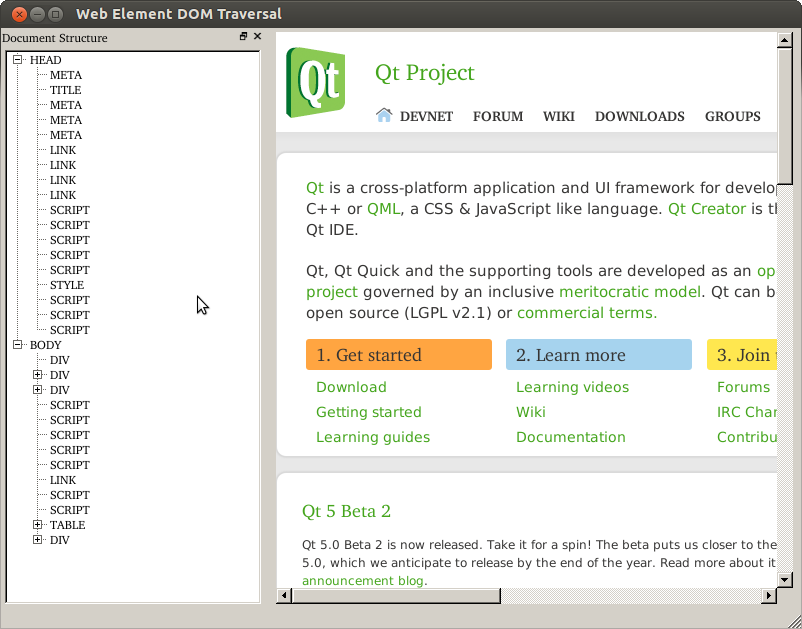

DOM Traversal Example
Demonstrates how to traverse the DOM tree
The DOM Traversal example shows how to use the QWebElement class to access the structure of a Web page.

The QWebElement class provides an API that can be used to examine the structure and content of a Web page via a Document Object Model (DOM) interface. It can be used for basic traversal of the document structure, to search for particular elements (see the Simple Selector Example), and to modify content in-place.
This example uses a QWebView widget to display the Web page, and a dock widget holds the QTreeWidget that shows the document structure. These widgets are placed in an instance of the Window class, which we describe below.
Window Class Definition
The Window class is derived from QMainWindow and its user interface is created using Qt Designer. As a result, the class is also derived from the user interface class created by uic:
#include "ui_window.h" class Window : public QMainWindow, private Ui::Window { Q_OBJECT public: Window(QWidget *parent = 0); void setUrl(const QUrl &url); public slots: void on_webView_loadFinished(); private: void examineChildElements(const QWebElement &parentElement, QTreeWidgetItem *parentItem); };
Two important functions to note are the on_webView_loadFinished() slot and the examineChildElements() function. The former is automatically called when the QWebView widget finishes loading a page. See the Further Reading section for more information on this mechanism.
The examineChildElements() function is used to traverse the document structure and add items to the QTreeWidget.
Window Class Implementation
In the Window class constructor, we call the setupUi() function to set up the user interface described in the window.ui file:
Window::Window(QWidget *parent) : QMainWindow(parent) { setupUi(this); }
When the Web page is loaded, the on_webView_loadFinished() slot is called. Here, we clear the tree widget and begin inspection of the document by obtaining the document element from the page's main frame:
void Window::on_webView_loadFinished() { treeWidget->clear(); QWebFrame *frame = webView->page()->mainFrame(); QWebElement document = frame->documentElement(); examineChildElements(document, treeWidget->invisibleRootItem()); }
At this point, we call the examineChildElements() function to traverse the document, starting with the child elements of the document element for which we will create top level items in the tree widget.
The examineChildElements() function accepts a parent element and a parent item. Starting with the first child element, which we obtain with the element's firstChild() function, we examine each child element of the parent item. For each valid (non-null) element, which we check by calling its isNull() function, we create a new QTreeWidgetItem instance with the element name and add it to the parent item.
void Window::examineChildElements(const QWebElement &parentElement, QTreeWidgetItem *parentItem) { QWebElement element = parentElement.firstChild(); while (!element.isNull()) { QTreeWidgetItem *item = new QTreeWidgetItem(); item->setText(0, element.tagName()); parentItem->addChild(item); examineChildElements(element, item); element = element.nextSibling(); } }
We recursively examine the child elements for each element by calling examineChildElements() with the current child element and the newly-created item. To obtain the next element at the same level in the document, we call its nextSibling() function.
This recursive approach to reading the document makes it easy to create a simple representation of the document structure in a tree widget.
For completeness, we show the setUrl() function, which is provided to allow the document URL to be set from the example's main() function.
void Window::setUrl(const QUrl &url) { webView->setUrl(url); }
Starting the Example
We set up the application, create a Window instance, set its URL, and show it:
#include <QApplication> #include "window.h" int main(int argc, char *argv[]) { QApplication app(argc, argv); Window window; window.show(); window.setUrl(QUrl("http://qt-project.org/")); return app.exec(); }
When the application's event loop is run, the Qt home page will load, and the tree widget will be updated to show the document structure. Navigating to another page will cause the tree widget to be updated to show the document structure of the new page.
Further Reading
The QWebElement documentation contains more information about DOM access for the QtWebKit classes.
In this example, we take advantage of Qt's auto-connection feature to avoid explicitly connecting signals to slots. The user interface contains a QWebView widget called webView whose loadFinished() signal is automatically connected to the on_webView_loadFinished() slot when we call setupUi() in the Window constructor.
Files: